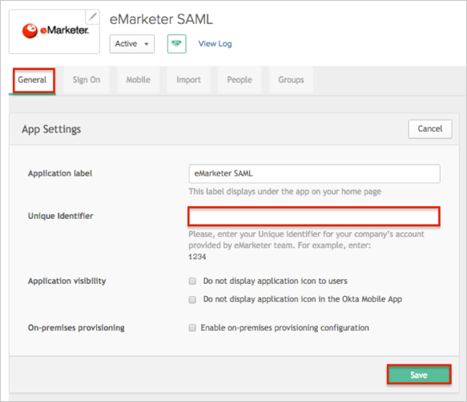

Contact the eMarketer Support team and request that they enable SAML 2.0 for your account.
Include the following with your request:
Metadata URL: Copy and paste the following URL:
Sign in to the Okta Admin app to have this variable generated for you
IDP Issuer: Copy and paste the following:
Sign into the Okta Admin Dashboard to generate this variable.
eMarketer Support will process your request and will provide you with a Unique Identifier.
In Okta, select the General tab for the eMarketer app, then click Edit.
Enter the Unique Identifier provided by eMarketer into the corresponding field.
Click Save.

Notes:
IDP-initiated flows and and Just In Time (JIT) Provisioning are supported.
SP-initiated flows are not supported.